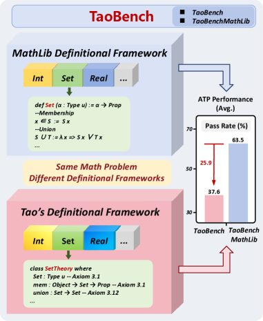

TaoBench: Do Automated Theorem Prover LLMs Generalize Beyond MathLib?
Alexander K Taylor, Junyi Zhang, Ethan Ji, Vigyan Sahai, Haikang Deng, Yuanzhou Chen, Yifan Yuan, Di Wu, Jia-Chen Gu, Kai-Wei Chang, Nanyun Peng, Amit Sahai, Wei Wang
Introduces TaoBench evaluating Lean ATP models on bespoke versus Mathlib definitional frameworks.
Abstract
Automated theorem proving (ATP) benchmarks largely consist of problems formalized in MathLib, so current ATP training and evaluation are heavily biased toward MathLib's definitional framework. However, frontier mathematics is often exploratory and prototype-heavy, relying on bespoke constructions that deviate from standard libraries. In this work, we evaluate the robustness of current ATP systems when applied to a novel definitional framework, specifically examining the performance gap between standard library problems and bespoke mathematical constructions. We introduce TaoBench, an undergraduate-level benchmark derived from Terence Tao's Analysis I, which formalizes analysis by constructing core mathematical concepts from scratch, without relying on standard Mathlib definitions, as well as by mixing from-scratch and MathLib constructions. For fair evaluation, we build an agentic pipeline that automatically extracts a compilable, self-contained local environment for each problem. To isolate the effect of definitional frameworks, we additionally translate every problem into a mathematically equivalent Mathlib formulation, yielding paired TaoBench-Mathlib statements for direct comparison. While state-of-the-art ATP models perform capably within the MathLib framework, performance drops by an average of roughly 26% on the definitionally equivalent Tao formulation. This indicates that the main bottleneck is limited generalization across definitional frameworks rather than task difficulty. TaoBench thus highlights a gap between benchmark performance and applicability, and provides a concrete foundation for developing and testing provers better aligned with research mathematics.
Problem
Automated theorem proving benchmarks consist largely of Mathlib-formalized problems, biasing training and evaluation toward Mathlib's definitional framework. It is unclear whether ATP models generalize to bespoke mathematical constructions that deviate from standard library definitions.
Approach
TaoBench is a benchmark derived from Terence Tao's Analysis I, which formalizes analysis by constructing core concepts from scratch without relying on Mathlib definitions. Each problem is additionally translated into a mathematically equivalent Mathlib formulation (TaoBench-MathLib) for direct comparison. An agentic pipeline extracts compilable, self-contained local environments for each problem.

Figure 1 : Tao’s Analysis I constructs several mathematical structures in LEAN from scratch, often using formulations that diverge significantly from their equivalents in MathLib. TaoBench provides mathematically equivalent MathLib counterparts, and reveals a substantial degradation in model performance when navigating Tao’s specific definitional framework.
Results
State-of-the-art ATP models suffer an average ~26% performance drop on the Tao formulation versus the equivalent Mathlib version. For example, Goedel-Prover-V2-8B achieves 37.33% on TaoBench vs 70.67% on TaoBench-MathLib (Pass@128). Context ablation shows a further 10-19 point drop without local definitions.
Model
TaoBench Pass@128
MathLib Pass@128
DeepSeek-Prover-V2-7B
41.33%
69.33%
Goedel-Prover-V2-8B
37.33%
70.67%
Kimina-Prover-8B
22.00%
50.00%
Goedel-Prover-V2-32B
49.33%
72.67%
ATP model performance on TaoBench vs TaoBench-MathLib